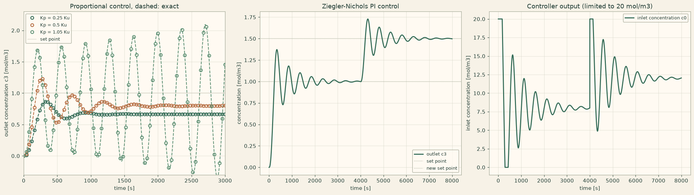

Docs › Examples › Tank reactors in series with feedback control
Control · 0D
Tank reactors in series with feedback control
Three stirred tank reactors in series whose inlet concentration a controller adjusts so that the outlet of the last tank follows a set point.
Run locally with OneSimulation. The example downloads are free. Running them requires an activated runtime. Runtime Alpha 0.2.1a7 · CPython 3.13 on macOS (Apple Silicon), Ubuntu 22.04 (x86-64), and Windows x64. Installation and activation · View pilot plans. Scope of the reference checks.

What it computes
OneSimulation integrates the loop as a signal-flow graph of three first-order tank lags with reaction, a sum block and a PID block with output limits and back-calculation, using the classical Runge-Kutta method. Proportional control at four gains around the ultimate gain is followed by a Ziegler-Nichols PI controller with a set-point change.
What it checks
The outlet matches the exact closed-loop step response from scipy.signal to 2e-10 to 8e-8 mol/m3, the offsets equal r/(1+Kp G^3) (0.33333), the oscillation periods at 0.95 and 1.05 Ku equal those of the closed-loop poles (369.0 and 356.9 s, ultimate period 362.8 s), and the PI loop settles at its set points without offset.
The notebook
The complete notebook, cell by cell. Run it to produce the figures and the comparison printout.
Three equal, perfectly mixed tanks of volume \(V\) are connected in series with the flow \(q\). In each tank the reactant decays by a first-order reaction \(A\to B\) with the rate constant \(k\):
so every tank is a first-order lag with time constant \(\tau\) and static gain \(G<1\). A feedback controller measures the outlet \(c_3\) and sets the inlet concentration \(c_0\) of the first tank, for instance by dosing a concentrate into the feed.
| block | law | value | |---|---|---| | tank \(i\) | \(\tau\dot c_i = G c_{i-1} - c_i\) | \(V=2\) m³, \(q=0.01\) m³/s, \(k=0.005\) 1/s | | controller | \(c_0 = K_p e + K_i\int e\,dt\), \(\;e=c_\text{set}-c_3\) | \(0 \le c_0 \le 20\) mol/m³ |
The loop is integrated as a signal-flow graph with the classical Runge-Kutta method.
Reference. With proportional control the closed loop has the transfer function \(K_pG^3/\big((\tau s+1)^3+K_pG^3\big)\); its step response is computed independently by scipy.signal, and its steady offset is \(c_\text{set}/(1+K_pG^3)\). The Routh criterion gives the ultimate gain \(K_u = 8/G^3\), at which the loop oscillates with the period \(P_u = 2\pi\tau/\sqrt3\) (Seborg, Edgar, Mellichamp & Doyle, Process Dynamics and Control, chapter 11). Ziegler & Nichols (Trans. ASME 64, 1942) tune a PI controller from these two numbers: \(K_p = 0.45\,K_u\), \(T_i = P_u/1.2\).
import numpy as np
from onesim.physics.systems import (
ControlSignalFlowConfiguration,
ControlSignalFlowPublicApi,
SignalBlock,
)
from onesim.visualization import plots, theme
from scipy import signal
theme.set()Plant data
The three tank parameters give the time constant and gain of each lag, and from them the stability limit of the loop.
volume, flow, rate, setpoint = 2.0, 0.01, 0.005, 1.0
tau, G = volume / (flow + rate * volume), flow / (flow + rate * volume)
ultimate_gain, ultimate_period = 8 / G**3, 2 * np.pi * tau / np.sqrt(3)
print(
f"tank time constant {tau:.1f} s, tank gain {G:.3f}; ultimate gain {ultimate_gain:.1f}, ultimate period {ultimate_period:.1f} s"
)Proportional control
The plant is one tuple of blocks, shared by all runs. The tanks start empty and the set point is 1 mol/m³. Four controller gains between a quarter of the ultimate gain and 10 % above it; the inlet concentration is not limited in these runs.
plant = (
SignalBlock("dose", "gain", inputs=("controller",), parameters={"gain": G}),
SignalBlock(
"tank1", "first_order", inputs=("dose",), parameters={"time_constant": tau}
),
SignalBlock("into2", "gain", inputs=("tank1",), parameters={"gain": G}),
SignalBlock(
"tank2", "first_order", inputs=("into2",), parameters={"time_constant": tau}
),
SignalBlock("into3", "gain", inputs=("tank2",), parameters={"gain": G}),
SignalBlock(
"tank3", "first_order", inputs=("into3",), parameters={"time_constant": tau}
),
SignalBlock(
"error",
"sum",
inputs=("setpoint", "tank3"),
parameters={"weights": (1.0, -1.0)},
),
)
fractions = (0.25, 0.5, 0.95, 1.05)
loop = lambda K: signal.lti(
[K * G**3],
np.polyadd(np.polymul(np.polymul([tau, 1], [tau, 1]), [tau, 1]), [K * G**3]),
)
proportional = {
f: ControlSignalFlowPublicApi().run(
ControlSignalFlowConfiguration(
parameters=dict(
blocks=plant
+ (
SignalBlock("setpoint", "constant", parameters={"value": setpoint}),
SignalBlock(
"controller",
"pid",
inputs=("error",),
parameters={"proportional_gain": f * ultimate_gain},
),
),
final_time=4000.0,
time_step=1.0,
)
)
)
for f in fractions
}
for f, run in proportional.items():
K = f * ultimate_gain
exact = setpoint * signal.step(loop(K), T=run.times)[1]
outlet = np.asarray(run.signals["tank3"])
print(
f"Kp = {f:4.2f} Ku: largest deviation from the exact step response {np.max(np.abs(outlet - exact)):.1e} mol/m^3"
+ (
f", offset {setpoint - outlet[-1]:.5f} (exact {setpoint / (1 + K * G**3):.5f})"
if f < 0.9
else ""
)
)
for f in (0.95, 1.05):
times, outlet = np.asarray(proportional[f].times), np.asarray(
proportional[f].signals["tank3"]
)
peaks = times[1:-1][(outlet[1:-1] > outlet[:-2]) & (outlet[1:-1] > outlet[2:])]
print(
f"Kp = {f:4.2f} Ku: oscillation period {np.diff(peaks).mean():.1f} s, from the closed-loop poles {2 * np.pi / loop(f * ultimate_gain).poles.imag.max():.1f} s "
f"(ultimate period {ultimate_period:.1f} s)"
)Ziegler-Nichols PI control
The PI controller removes the offset. Its output is limited to the physical range of the inlet concentration, with back-calculation against integrator wind-up. After 4000 s the set point is raised to 1.5 mol/m³. The tuning aims at a quarter decay ratio, so the response rings before it settles.
Kp, Ti = 0.45 * ultimate_gain, ultimate_period / 1.2
pi_run = ControlSignalFlowPublicApi().run(
ControlSignalFlowConfiguration(
parameters=dict(
blocks=plant
+ (
SignalBlock(
"setpoint",
"source",
source=lambda t: setpoint if t < 4000 else 1.5 * setpoint,
),
SignalBlock(
"controller",
"pid",
inputs=("error",),
parameters={
"proportional_gain": Kp,
"integral_gain": Kp / Ti,
"lower": 0.0,
"upper": 20.0,
"anti_windup": "back_calculation",
"tracking_time": Ti,
},
),
),
final_time=8000.0,
time_step=1.0,
event_times=(4000.0,),
)
)
)
pi_times, pi_outlet = np.asarray(pi_run.times), np.asarray(pi_run.signals["tank3"])
print(
f"PI controller Kp = {Kp:.2f}, Ti = {Ti:.1f} s: outlet at 4000 s {pi_outlet[pi_times <= 4000][-1]:.5f}, at 8000 s {pi_outlet[-1]:.5f} "
f"(set points 1.0 and 1.5); highest inlet concentration {np.max(pi_run.signals['controller']):.2f} mol/m^3"
)Figure
Outlet concentration under proportional control against the exact response (a quarter of, half of and 5 % above the ultimate gain), the PI controlled outlet, and the inlet concentration the PI controller sets.
fig = plots.figure(1, 3, size=(18, 5))
plots.line(
points={
f"Kp = {f} Ku": (
np.asarray(run.times)[::40],
np.asarray(run.signals["tank3"])[::40],
)
for f, run in proportional.items()
if f != 0.95
},
reference={
f"Kp = {f} Ku": (
run.times,
setpoint * signal.step(loop(f * ultimate_gain), T=run.times)[1],
)
for f, run in proportional.items()
if f != 0.95
},
hlines={"set point": setpoint},
xlimits=(0, 3000),
ylimits=(-0.3, 2.3),
xlabel="time [s]",
ylabel="outlet concentration c3 [mol/m3]",
title="Proportional control, dashed: exact",
legend="upper left",
ax=fig[0],
)
plots.line(
y={"outlet c3": (pi_times, pi_run.signals["tank3"])},
hlines={"set point": 1.0, "new set point": 1.5},
xlabel="time [s]",
ylabel="concentration [mol/m3]",
title="Ziegler-Nichols PI control",
legend="lower right",
ax=fig[1],
)
plots.line(
y={"inlet concentration c0": (pi_times, pi_run.signals["controller"])},
xlabel="time [s]",
ylabel="inlet concentration [mol/m3]",
title="Controller output (limited to 20 mol/m3)",
ax=fig[2],
)
plots.show()Going further
Add a transport delay between the controller and the first tank and watch the ultimate gain drop. Replace the PI controller by a sampled one (sample_hold) to see the effect of a slow analyser, or make the reaction rate in the tanks drift and test how robust the tuning is.